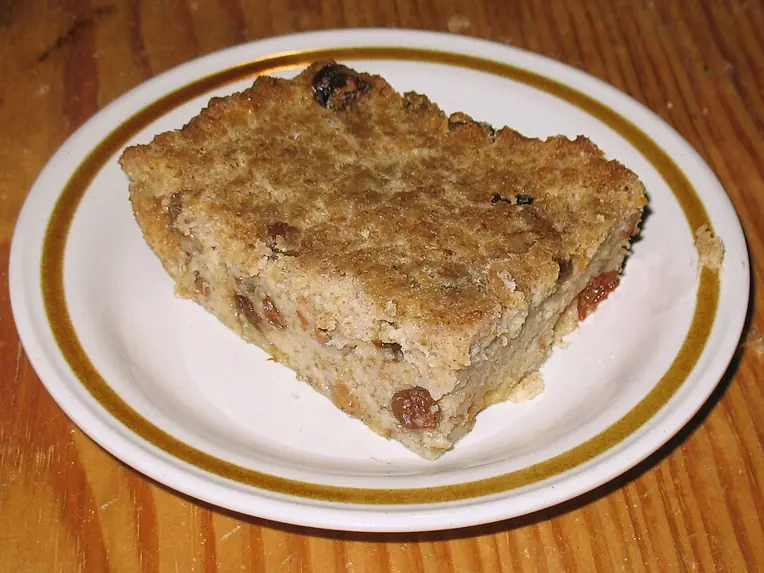

Фото: Roly Williams, CC BY-SA 3.0

Хлебный пудинг
Сладкая запеканка из чёрствого батона в молочно-яичной заливке с изюмом
60 мин4 порц.474 ккал на порциюБ 15 · Ж 16 · У 65Европейская кухня
Продукты на 4 порц.
- Чёрствый хлеб10 шт
- Молоко2,5 стак.
- Яйцо куриное3 шт
- Сахар4 ст. л.
- Сливочное масло30 г
- Ванильный сахар1 пакетик
- Изюм по желанию50 г
- Корица по желанию1 щеп.
Как готовить
- Включите духовку на 180 °C (средний жар). Форму смажьте частью сливочного масла.
- Хлеб нарежьте кубиками 2-3 см, сложите в форму и перемешайте с изюмом.
- Взбейте вилкой яйца с сахаром и ванильным сахаром, влейте молоко, перемешайте.
- Залейте хлеб смесью, слегка придавите ложкой и оставьте на 15 минут, чтобы хлеб пропитался.
- Сверху разложите кусочки оставшегося масла и посыпьте корицей.
- Запекайте 35-40 минут, пока верх не станет золотистым, а заливка в центре не схватится и не перестанет дрожать.
Совет. Подходит любой белый хлеб, батон или булки. Совсем сухой хлеб оставьте в заливке на 30 минут, иначе внутри останутся твёрдые кусочки.